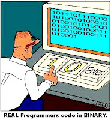

Notes On Software Engineering And Software Architecture
{kind=link}
Before diving into any argumentation I'd like to point out that I strongly believe that software development should be scientifically managed and developed, that patterns are good and that at no time one should start coding before thinking first about the implications of what he is doing, about where that code should be merged, about what his task is all about and how. Yes, think before you do! The main concerns a software engineer should have are:
-
Do I perfectly understand what is the scope of my taks?
-
Do I perfectly understand what is the scope of the program and where my task fits in it?
-
Do I perfectly understand previously written code - or at least its main concepts and structure?
-
Am I making sure I am not duplicating functionality?
-
Can I fit my task onto existing patterns and structure, what are the existing pieces of code that I can reuse (not copy-paste)
If you are not sure about any of the questions above, it is imperative to ask!
In the lines above I've tried to avoid using the terms "software engineering" or "software architecture". They are good terms, they summarize perfectly the concepts of solid development but I feel that, by being overused, their meaning is somehow lost.
What is engineering and what is software engineering? Well, since the beginning of the century students were told that engineering is the act of using theoretical principles and forces of nature to build something useful. The focus is not on the process of "engineering" but rather on the work product - yes, engineering is not a process and it's not even a fixed guideline. I'm making this point very clear because many developers gather under the term of software engineering a whole personal philosophy of how software should be done, what rules should be applied, how code should be written and they think it's the fault of the management that these are not followed - however, each developer has his own philosophy. This creates around the term a mystical aura and a sense of guilt that pushes the notion far away from its original meaning = use your knowledge to build something useful.
Something similar is with software architecture and many think of software architecture as a predefined set of mandatory classes, a lot of links between objects and, generally, a hug 
{kind=link}
Yes, every time you feel the need to build a system stop and ask yourself: why? - and try to be honest about it - are you developing it because it is cool and you want to show off a little or because it is really needed? If it is really needed, you may want to think again.
Systems are not bad by themselves and many times they are useful. What makes them bad is that, sometimes, their scope is not perfectly defined, that the developer tends add code that "might be useful in the future" and most of the time it is not; they increase the amount of minimal knowledge about the program one should have (there is this system, that system and the other one - which one should I use?), usually they don't fit on existing architecture and, in the end, they only add extra complexity if not properly managed.
Many times "architecture" is done on an egocentric basis rather than feature-centric and that is not pragmatism. Most of the times, the best code is the minimal code required to perform a certain task. If it's proven insufficient, one should have enough energy to refactor it. Failing to do so leads to cowboy coding and hacks in no time especially if changes are not properly managed. A large program is, by itself, a complex system and his structure should be revised constantly and, if it's not fit, modified. Such a task is usually huge and of vital importance and should only be undertaken by the most experienced developers in the team.